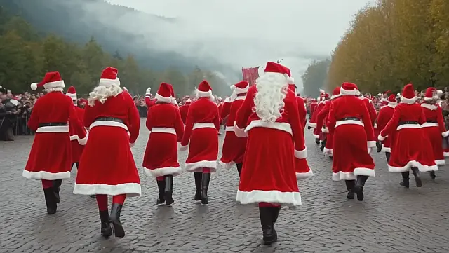

Mikulás Legendája
A Mikulás, más néven Szent Miklós, a jószívűség és az ajándékozás szimbóluma. A legenda szerint titokban segítette a szegényeket és ajándékokat hagyott a rászorulók számára.
Hagyományok
Európában sok országban december 6-án ünneplik a Mikulást. A gyerekek kiteszik csizmáikat, amelyeket a Mikulás édességgel vagy ajándékokkal tölt meg.
Ajándékok
A Mikulás ajándékai hagyományosan édességek, játékok és apró meglepetések. Azoknak a gyerekeknek, akik rosszalkodtak, egy széncsomót hagyott.